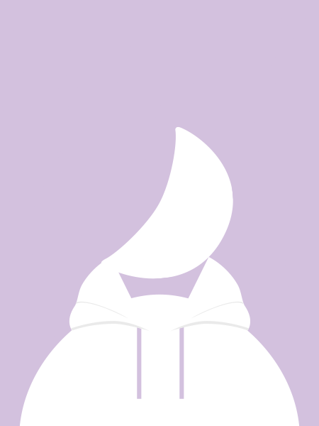

About Me

「 Jedem Anfang wohnt ein Zauber inne. 」
— Hermann Karl Hesse
嗨，我是 GK。
我喜歡製造各種形式的作品——從一張插畫到一款互動遊戲，更甚至短短一段文字、一篇故事都是我用來表達想法的媒介。
只要閒下來就是不停深度思考，我需要一個好的出口 ——
於是我選擇了創作。
高中就讀三類組，大學想不開選了藝術科系
，即便我沒有任何藝術基礎。到現在作為一個稱職的Z世代，我利用網路學我想學，做我想做。
正在接觸的有：日文、插畫、寫作、製作遊戲（Twine/Godot）、前/後端程式技術。
目前正在開發中的專案包含：一個敘事向的純文字遊戲，以及這個網站本身。
Skills
數位插畫
★★★★★
角色設計
★★★★★
遊戲開發 (Twine / Godot)
★★★★★
敘事設計
★★★★★
網頁設計 (HTML/CSS/JS)
★★★★★
音效設計
★★★★★
Timeline
2025 . 06
近期里程碑名稱
在這裡描述這個事件或成就的細節，例如完成了某個遊戲的開發、參加了某個展覽等等。
2025 . 03
另一個里程碑
在這裡描述這個事件或成就的細節，可以是個人創作、學習新技能，或是完成了某個重要的專案。
2024 . 10
開始了某件事情
可以填入您開始一個長期計畫、加入某個社群，或決定認真投入某個領域的時間點。
2024 . 04
更早期的事
時間軸可以向下無限延伸，依照需求持續新增事件即可，較早的事件位於下方。